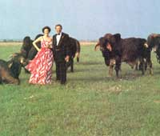

Deep In The Heart Of Texas
Like the stars at night, the barbecues are big bright.
By Joan Nathan
July/August 1987
A more subdued tone marks this sprawling kingdom of a ranch now that the boss is dead, killed a couple of years ago when his car was demolished by a pickup in the hands of a 20-year-old who had put away way too much bourbon, or something. But the barbecues the boss and Mary Sue held after stock sales or to celebrate holidays with friends and family have become legends in a state where legends don't rise easily. His voice, unabashed and penetrating, can still be heard in his neighbors' memories, booming across the prairie.
I just love the Fourth of Joo-ly," blared Henry Clay Koontz, the boss. It was late in the evening on a hot and humid south Texas Fourth of July, and Henry was looking out from the upper deck of the HK Ranch pool house to the pasture, where two cowhands were setting off a 30-minute fireworks display that eclipsed the starry night itself. Just a few hours earlier, this same field had been filled with HK cattle, some of the most highly prized Brahman breeding stock in the country. A wind surfer on the pond had scared off a hundred or so. Now the endless prairie seemed deserted except for a lone trailer. Sitting with Henry Clay, guests could see the wide-open range on all sides. On the other side of the ranch house, Joe Padilla, the Mexican head cook, and the top ranch hands were still dishing out the barbecue vittles.
The annual HK Ranch Fourth of July Party was fun, Texas-size, orchestrated by Henry Clay and his wife, Mary Sue, for about 200 friends and family members. The ranch, a division of the 35,000-acre family-owned Keeran Ranch, was started in 1867 by Henry's great-grandfather, Captain John N. Keeran, a Texas pioneer. In 1878, Keeran imported the first humpbacked Brahman cattle from India into the Western Hemisphere. Henry Clay's mother was a well-known Brahman breeder and followed in the family tradition. "See those lights there. That's the Luaca Bay, and to the south is the old port of Indianola. That's where my greatgrandfather, along with Shanghai Pierce, brought the Brahmans into Texas." Place-do, where the ranch is located, is dotted with gooseneck oil wells and rice and milo fields. It lies about 100 miles south of Houston and 14 miles from the Gulf of Mexico.
Guests approach the HK Ranch through a gate that's decked out in red, white and blue crepe paper flying from the top of a 15-foot centennial yucca plant. A few miles into the ranch on a din road, they pass the original Keeran family homestead, a large white building with 19 columns, now belonging to Emily Keeran Campbell, or Aunt Emma, as she is called.
At a second checkpoint, beyond another fence enclosing yet more prairie, a yes-sir-ee cowboy in Stetson hat and boots meets each guest with a red bandana wrapped around an icy Lone Star beer, while Sousa marches rouse it up in the background.
Mary Sue tells the story that when she and Henry Clay got married, she didn't want to live on the ranch. "We moved into my little house in Victoria, and he drove back and forth to the ranch every day. That lasted about two months, and then late one night he got a phone call. I could tell he was talking about buying and moving . . . something." Fed up with the commute, he was arranging to move a house 20 miles from Victoria to the HK Ranch.
As it happened, the house Henry Clay had bought-sight unseen-that evening was a church bedecked with JESUS SAVES in blue neon lights. Before Mary Sue would step into it, however, Henry Clay had to convert it into a home.
Today clumps of pampas grass lead up to the incongruous house. A swimming pool, bordered with palm trees, sits to its right, with a screened-in pool house containing a kitchen and a dumbwaiter that goes up to the roof terrace, Henry's favorite under-the-stars dining area. On the veranda, with its white wicker rockers and a seven-foot porch swing, a small engraved brass plaque reads: ABSOLUTELY NOTHING HAPPENED HERE IN 1897-a takeoff on the Texas Heritage markers scattered on historical landmarks throughout the state.
For the Fourth of July party, the front lawn-really the front prairie-was filled with burros decked out in straw hats softened with flowers, waiting for the races to begin. From 4:00 until dusk, Mary Sue steered her guests through old-fashioned fun and games: a sack race, croquet, volleyball, softball, horseshoe throwing, spin-the-bottle and water volleyball. Grilled beef sausage on tortillas with Joe Padilla's hot chilipetin sauce woke up the taste buds and got the assembled appetites in gear.
Then Mary Sue stood up on the bandstand, made from an old cattle trailer painted red, white and blue for the occasion and decorated with an HK banner that had hung over their champion Brahmans in recent cattle shows. The sun had gone down, and the bandstand was ablaze with colored lights and candles.
"Listen, you all! As most of you know, we wouldn't be enjoying ourselves so much tonight if it weren't for Joe Padilla and his men," Mary Sue thundered over the loudspeaker before presenting Joe with a trophy. After a short patriotic speech, she let out six doves of peace, rang the freedom bells and had the Mexican mariachi band play its cha-cha rendition of "God Bless America." Eight long picnic tables bordering the swimming pool, the steps of the veranda, the pool-house and pool-roof tables-all now lit with candles-awaited the hungry guests as they shuffled through the buffet line. The quantities of food showed that Joe had earned his award. When Texans say barbecue, they don't mean cooking on a hibachi or gas grill.
Actually the word barbecue comes from barbacoa, a Caribbean Indian word. To a Carib, a barbacoa was a grate of thin green sticks set on sticks upon which meat was grilled over an open fire. The meat was cut into thin strips and slowly cooked. To this method of curing and cooking meat, each immigrant settler added his own favorite spices. For the Indians, a barbecue became a particularly popular means of socializing. They would often go to a beach to bake fish encased in mud in the ashes of a fire or to barbecue pork or chicken (thus the New England clambake). The Indians may have started this custom, but the early Texans felt quite comfortable with it, used as they were to assembling around a cookfire at night after the work of the day was finished.
When Texans say barbecue, they don't mean cooking on a hibachi or gas grill.
Today Texans grill on 50-gallon oil drums, cut in half lengthwise, hinged and rigged with a rack and a little smokestack. Each device is set on a couple of wheels. The day before the party, ranch hands had gathered prickly mesquite wood. On this particular morning, they had started open fires and stoked barbecue pits with oak and cedar chips. Joe used three grills-two for sausages and a huge one for the chickens. A giant iron bean pot, holding pinto beans the color of terra cotta, was placed on a tripod over an open fire. "You'll find a pot of pinto beans sitting on the stove all day in most south Texas ranch kitchens," Mary Sue explained, "and coffee that's strong enough to walk!" Maria Padilla, Joe's wife, had made corn tamales in the coals of one of the grills. The same method produces hot tamales.
Joe makes up his hot sauce from the tiny, fiery chili pequins that grow all over the ranch. Seventy-one-year-old Annie Todd, the now-retired cook who took care of Mary Sue as a child, made potato salad for the occasion. She sat watching the goings-on, wearing a white apron embossed in red with the ranch's logo and an imposing Brahman.
Later on in the night, 20 or so older guests sat with Henry Clay in his favorite roost, all watching the fireworks display. As the fireworks-and the evening-wound down, Henry Clay decided to help intensify the finale by letting out a loud Texas holler: "Mary Sue, let's hear Kate Smith!" Mary Sue turned on a record. As the red, white and blue firecrackers lit up the sky; the HK Ranch was filled with Kate Smith blasting out "God Bless America." After the fireworks ended, the young people danced on the top deck until 2:00 a.m., while the out-of-towners headed back to their homes. As one guest who had lived for a while in Virginia explained, "You couldn't have this kind of Fourth of July barbecue in the East. You simply don't have the room."
Joe Padilla's Chilipetin Sauce
"For toughies only," says Mary Sue.
1 cup green chili pequin peppers
1 medium onion
1 clove garlic
1 green tomato
1 teaspoon flour
1 cup vinegar
2 tablespoons sugar
1 teaspoon salt
Grind fine or chop the peppers, onion, garlic and tomato. Add the flour.
Bring the vinegar, sugar and salt to a boil. Pour over the pepper mixture and stirring occasionally, boil, uncovered, for about 30 minutes, or until it thickens slightly. Seal while hot in sterilized jars. The sauce will be thin, but it thickens with age.
Serve as a condiment at your next Texas barbecue with fajitas, camp bread, venison chili, pinto beans and coleslaw. Makes 1 pint.
Calabaza con Polio (Squash with Chicken)
This is Maria Padilla's recipe for a Tex-Mex chicken dish.
1 large fryer, cut into eighths ¼ cup oil
½ teaspoon cumin powder, or to taste
½ teaspoon garlic powder, or to taste
Salt and freshly ground pepper to taste
4 medium zucchini, chopped into 2-inch chunks
1 small onion, diced
1 green pepper, diced
1 15-ounce can tomatoes
½ cup water
1 8-ounce can corn (optional)
Brown the chicken in oil in a Dutch oven or heavy frying pan. Season with the cumin, garlic, salt and pepper. Add the zucchini, onion, green pepper, tomatoes and water.
Cover and simmer about 30 minutes, or until the zucchini is soft and the chicken cooked. Just before serving, add the corn and heat until warm. Serves 4-6.
Braised Quail, Squab or Cornish Hen
Wild doves are the favorite in the Southwest.
3 slices bacon
8 quails, 4 squabs or 4 Cornish hens
Salt and freshly ground pepper to taste
1 tablespoon crumbled dried rosemary
1 medium onion, peeled and cut into eighths
¼ cup flour
2 tablespoons unsalted butter, or more as needed
1/3 cup Madeira wine or sherry ½ cup chicken stock or water, or more as needed
Choose a casserole that has a tight-fitting lid and is large enough to hold all the birds. In it, fry the bacon over moderate heat until crisp. When the bacon is done, remove it, chop it fine and reserve. Pour off most of the bacon fat in the pan, leaving a generous film.
While the bacon is cooking, prepare the quails. Wash and dry the birds carefully. Sprinkle the cavity of each with salt and pepper, plus a pinch of rosemary (more for squabs and Cornish hens than for quails), and 1 or 2 segments of the onion. Secure each bird in a compact shape, either with toothpicks or by tying with string (wrap a length of string around the wings, trussing them behind the back; turn the bird over, bring the string around to the legs and tie them).
Place the flour on a plate and season it with salt and pepper. Heat the butter in the casserole just until the foam dies down. While the butter heats, coat the birds with the seasoned flour; shake off the excess.
Brown the birds in the hot fat, turning them with tongs until they are browned on all sides. This should take about 10 minutes. Remove the birds to a plate.
Pour most of the fat out of the casserole. (If it has become too brown, you may wish to pour it all off, then replace it with about a tablespoon of fresh butter.) Add the wine and, over high heat, scrape up the browned bits in the pan. Add the stock or water and boil for 1-2 minutes. Lower the heat to a simmer, return the birds to the pan and sprinkle them with the reserved chopped bacon. If the liquid does not come about 1/3 of the way up the birds, add a little more stock or water. Cover the casserole tightly and simmer the birds-about 25 minutes for quail, 45 for squab and Cornish hen-until they are tender. (You may also do this final simmering in a preheated 350°F oven.)
Place the birds on a warmed platter, skim off any excess fat from the sauce, pour the sauce over the birds and serve them at once. Serves 4.
Fajitas (Marinated and Grilled Skirt Steak)
The Koontzes prefer this dish to the more common Texas chicken-fried steak.
4 pounds fajitas (skirt steak) or, if unavailable, tenderized flank steak
Juice of 8-12 Mexican limes
2 cloves garlic, chopped
2 onions, sliced
2 serrano chili peppers, minced
1 handful coriander, stems removed and leaves chopped
Mexican beer
Salt to taste
Trim off the excess fat from the meat and remove the muscle fiber. Each fajita should be ½ to ¾ inch thick in order to cook evenly. If using flank steak, cook it whole and slice against the grain in narrow strips not more than ½ inch thick.
Place one layer of fajitas in the bottom of a large roasting pan. Pour the lime juice over it. Add some of the garlic, onion, serrano peppers and coriander. Add another layer of meat, and continue until all ingredients have been used.
Pour enough beer over the fajitas to fill the pan halfway. Cover with plastic wrap and marinate in the refrigerator for 6 hours, basting occasionally.
Build a mesquite fire in your grill and let it burn until the coals are extremely hot but not flaming. Lay the meat across the grill and cover. Turn the meat only once as it cooks. When done, remove the meat from the grill and sprinkle with salt to taste. Serves 6-8.
Roast Filet of Venison
1 venison filet ("back strap")
Salt and freshly ground pepper to taste
¼ teaspoon crumbled dried rosemary
3-4 tablespoons butter, softened Bacon strips or thin sheets of salt pork, as needed
1 thick slice of onion
Trim excess fat and all tendons from the meat. Sprinkle lightly with salt, pepper and rosemary. Rub with half of the butter. Wrap slices of bacon or salt pork around the filet, covering it completely. Tie with string in several places to hold the larding fat on.
Cowboys like beef stew; Indians and Mexicans like spice. Tex-Mex chili is the result.
Place a roasting pan over 2 burners of the stove and heat the remaining butter in it. Cook the onion over low heat for several minutes to flavor the butter, then discard the onion. Raise the heat, put in the filet and brown it on all sides.
Using the same pan, place the venison in a preheated 400°F oven and roast it for about 15 minutes, or until the meat tests medium-rare (140°F on a meat thermometer); at this stage it will be slightly springy to the touch, but not yet firm. Let the meat rest for 10 minutes. Remove the larding fat before carving, and serve hot. Serves 3-4.
Camp Bread
This is the Texas version of traditional hoecakes. On the range they were molded less delicately, grabbing a lump of dough at a time, and cooked in a Dutch oven over an open fire.
3 cups flour
1 teaspoon salt
2 tablespoons baking powder
¾ cup vegetable shortening, chilled and cut into small pieces, plus a little additional shortening for the skillet
1¼ cups buttermilk
In a mixing bowl, thoroughly combine the flour, salt and baking powder. Add the shortening pieces and rub them into the dry ingredients with your fingers until the mixture is crumbly and uniform. (This step may also be done in a food processor.) Using a spoon, mix in the buttermilk until the ingredients are blended. Do not overmix-the dough should be just springy.
Flour a work surface lightly and roll the dough out ¼ inch thick. Cut into 2-inch rounds, using a cookie cutter or a glass of that diameter. Gather the scraps, reroll them and cut more rounds until all the dough has been used.
Heat a large, heavy skillet, then grease it lightly with vegetable shortening. Bake the rounds over medium to medium-high heat until the bottoms are brown, then turn and brown the other side. Total cooking time is about 15 minutes.
Repeat until all the bread rounds have been baked, keeping the finished camp bread hot. Serve hot, with butter or gravy. Serves 12.
Venison Chili
Make this as hot as you can stand it. Texans speak of "two-alarm," "three-alarm," or "four-alarm" chili. If you grind seeded dried chilies instead of using prepared chili powder, increase the quantity of cumin and add about a teaspoon of dried oregano, well crumbled.
A dish of the prairie, chili is basically a simple beef stew seasoned with what was available: capsicum (chili) peppers; cumin, brought with the Moors to Mexico and then to Texas; oregano, a Mexican herb; and onions. The word chili comes from the Aztec term for the capsicum peppers.
Modern chili (stew) is a perfect example of culinary synthesis. The western frontiersmen liked beef stew; the Indians and Mexicans liked hot spices. Ergo, a Tex-Mex concoction called chili was created. Especially popular on the frontier, it could be made one day and eaten day after day because the tastes improve on sitting. The chili stew eaten in New Mexico is probably closer to what was eaten in the Southwest before the Tex-Mex combination. California chili with beans is definitely later.
2 pounds venison or chuck, coarsely ground
Vegetable oil, if necessary
1 large onion, peeled and chopped
2 cloves garlic, peeled and finely minced
1 teaspoon whole cumin seeds
1 teaspoon crumbled dried oregano, if needed
l½ teaspoons salt
2 heaping tablespoons flour
1-3 tablespoons chili powder, to taste (use the lesser amount if you grind your own dried chilies)
2 15-ounce cans tomato sauce
l½ cups water
In a large, heavy casserole, brown the meat in its own fat. (If the meat is quite lean, you may wish to begin with a spoonful of oil to prevent sticking.) Stir the meat as it cooks, breaking up any lumps.
When the meat has browned moderately, add the onion, garlic, cumin, oregano (if used) and salt. Cook, stirring, for 2-3 minutes, until the onion has softened. Stir in the flour and chili powder, blending well. Stir in the tomato sauce and water.
Bring the chili to a boil, lower the heat and simmer, uncovered, for 30 minutes or until the meat is tender, stirring occasionally to prevent sticking. Taste and add more salt or other seasonings if needed. Serves 6-8.
HK Ranch Famous Pinto Beans
2 pounds fresh pinto beans
2 ham hocks or 1 ham bone
5 bell peppers, chopped
5 large onions, chopped
Salt and freshly ground pepper to taste
½ cup sugar, or to taste
4 tablespoons chili powder, or to taste
3 chili peppers, diced
Spread the beans on a table and look for any small rocks. Put the beans in a sieve and run cold water over them to wash. Then place them in a large pot and cover with cold water overnight, or for at least 12 hours.
Add enough water to the soaked beans to cover them. Heat in a black iron pot or heavy casserole on top of the stove. Add all the remaining ingredients. Stir well and simmer, uncovered, very slowly for 5-6 hours, stirring from the bottom to prevent sticking. If the beans seem to become too dry, add a little water. Serves 20.
Jalapeño Corn Bread
1 cup yellow cornmeal
½ teaspoon baking soda
½ teaspoon salt
¾ cup milk
1 clove garlic, finely chopped
1 onion, grated
2 eggs
1 3-ounce can cream-style corn
¼ cup bacon drippings
1 pound American cheese, grated
2½ large jalapeño peppers, finely chopped, or to taste
Mix together the cornmeal, baking soda, salt, milk, garlic, onion, eggs, corn and bacon drippings. Spread half the batter in a well-greased 8" pan. Sprinkle with the cheese and peppers. Cover with the remaining batter. Bake 45 minutes at 350°F. Makes 12 slices.
Joan Nathan is a freelance writer and a contributing editor to AMERICAN COUNTRY magazine.
|
JOHN WHITMAN/M MAGAZINE The late Henry Clay Koontz with some of his prize Brahmans. |
 DAVID BURNETT/CONTACT PRESS IMAGES A more subdued tone marks this sprawling kingdom of a ranch now that the boss is dead, killed a couple of years ago when his car was demolished by a pickup in the hands of a 20-year-old who had put away way too much bourbon, or something. But the barbecues the boss and Mary Sue held after stock sales or to celebrate holidays with friends and family have become legends in a state where legends don't rise easily. His voice, unabashed and penetrating, can still be heard in his neighbors' memories, booming across the prairie. |
DAVID BURNETT/CONTACT PRESS IMAGES Mary Sue and Henry, all dressed up and ready for the party |
|
 GRAY HAWN & ASSOCIATES |
|
|